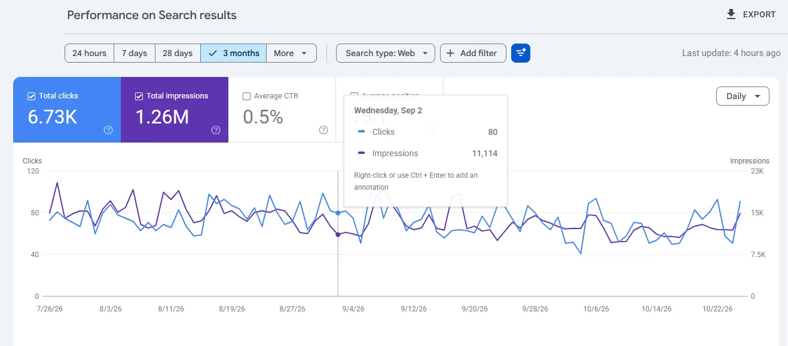
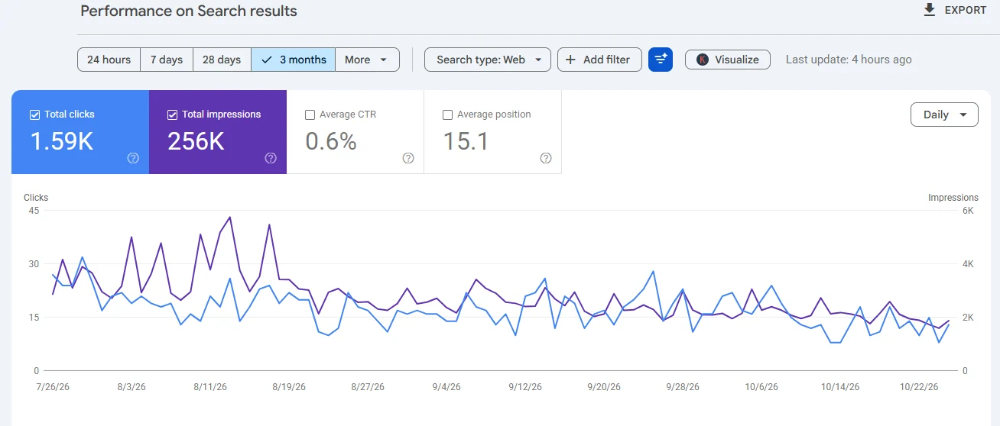
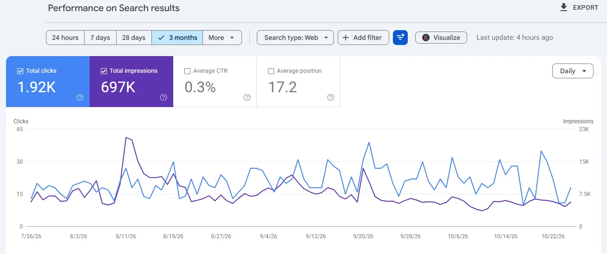
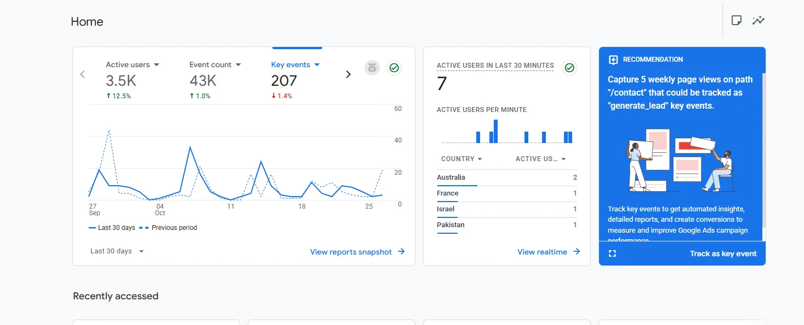
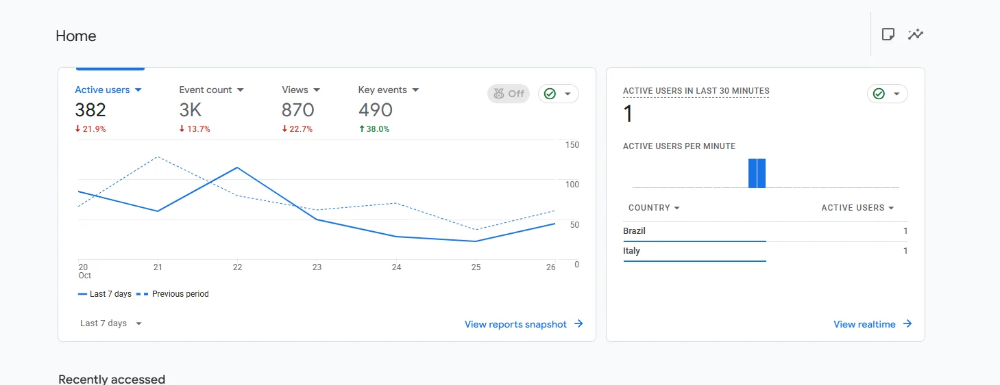
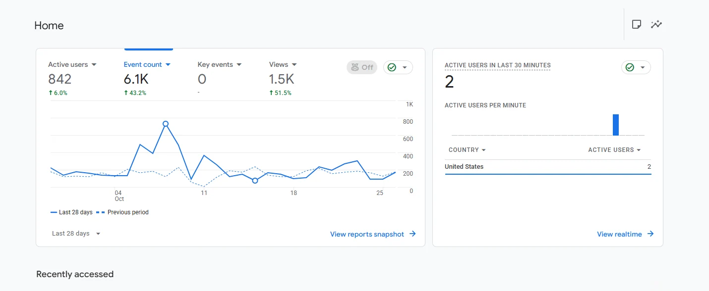

01⌘
Technical SEO
Site audits, crawling and indexing diagnostics, XML sitemaps, canonicalization, site architecture and Core Web Vitals improvements.
CrawlingIndexingSite Health
SEO Executive · Open to opportunities
I'm Muhammad Farhan, an SEO Executive with 2 years of experience in technical, on-page and local search optimization. I combine hands-on audits, practical SEO strategies and performance insights to build stronger organic visibility.
Muhammad Farhan
SEO Executive
Optimizing for people, search engines and the future of discovery.
01 / ABOUT ME
I believe effective SEO begins with understanding how people search and how search engines discover, interpret and rank content.
I'm Muhammad Farhan, an SEO Executive with two years of professional experience at ITTribes. My work focuses on identifying technical barriers, refining on-page elements, improving local search signals and using analytics to guide ongoing optimization.
I also follow the evolution of search through Answer Engine Optimization (AEO) and Generative Engine Optimization (GEO), with an emphasis on clear, useful, well-structured content. I aim to connect SEO recommendations with meaningful business outcomes.
Connect with me on LinkedIn02 / WHAT I DO
From solid technical foundations to emerging AI-powered search experiences.
Site audits, crawling and indexing diagnostics, XML sitemaps, canonicalization, site architecture and Core Web Vitals improvements.
Keyword research, search intent alignment, title and meta optimization, internal linking, content structure and semantic relevance.
Google Business Profile optimization, location-specific keyword strategies, local landing pages and local competitor analysis.
Structuring helpful, concise answers to relevant search questions using clear headings, contextual content and structured data where appropriate.
Exploring discoverability in AI-assisted search through useful content, entity clarity, source quality and consistent information architecture.
03 / CAREER
ITTribes
Working across technical SEO, on-page optimization, local SEO and performance monitoring. Responsibilities include SEO research, identifying website issues, recommending practical improvements, monitoring search visibility and supporting ongoing optimization initiatives.
04 / PROJECTS & PERFORMANCE
Selected Google Search Console and Google Analytics 4 screenshots from SEO reporting. Figures are snapshots, not claimed before-and-after improvements.
Examples below are anonymized. Individual website names, project ownership, and exact SEO contributions are not independently verified by the screenshots. Each panel describes the displayed period only.

Average CTR: 0.5%. Shows organic search performance across the selected three-month reporting window.

Average CTR: 0.6%. Average position: 15.1 for the shown reporting window.

Average CTR: 0.3%. Average position: 17.2 for the shown reporting window.

Dashboard shows 207 key events. The trend chart is set to the last 30 days; headline metric periods should be verified in GA4 before external reporting.

Dashboard also displays 3K events and 490 key events. Trend chart shows a last-7-days comparison.

1.5K views shown. The chart compares the last 28 days with the preceding period.
05 / MY TOOLKIT
Reliable research, technical diagnosis and measurement support better SEO decisions.
06 / MY APPROACH
Practical SEO is an iterative cycle of research, action and measurement.
Understand business goals, audiences, search intent, competitor positioning and keyword opportunities.
Evaluate technical health, site architecture, content quality, indexation and local-search presence.
Turn findings into a realistic roadmap based on relevance, impact, effort and available resources.
Improve technical elements, page structure, internal linking, content and local optimization signals.
Review GSC and GA4 insights, observe performance trends and adjust actions over time.
07 / EDUCATION
IN PROGRESS
Currently pursuing a bachelor's degree in Computer Science.
COMPLETED
Completed Higher Secondary School education.
08 / LET'S CONNECT
I'm interested in connecting with teams and businesses that value thoughtful SEO execution and lasting organic growth.
farhanali715644@gmail.com